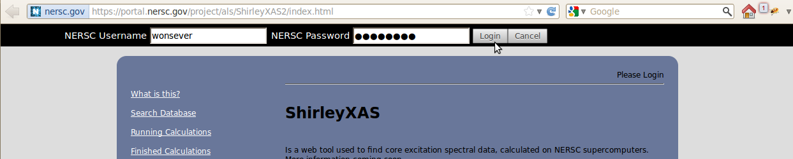
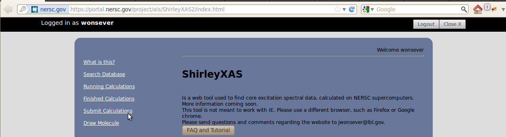
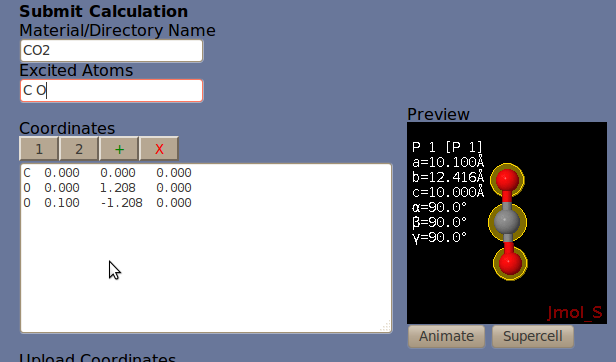
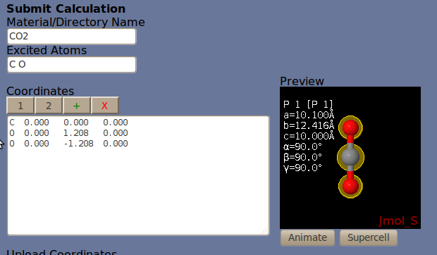
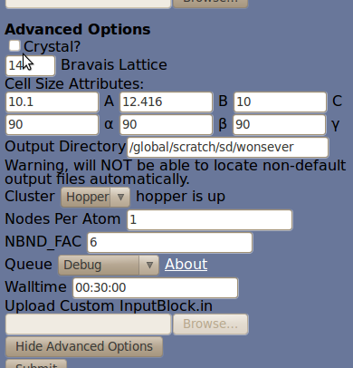
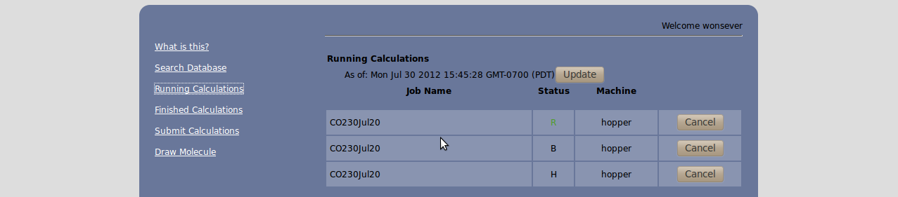
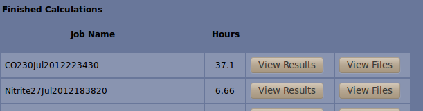
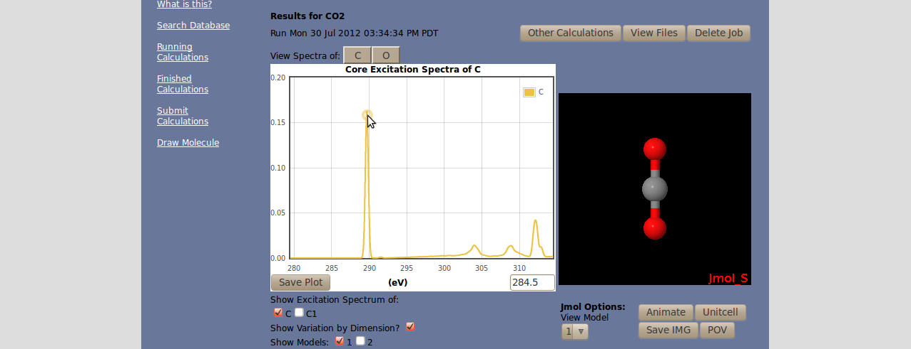
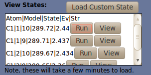
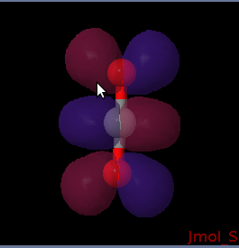

Tutorial
8/1/12
FAQ
HOME
Where do you start on a tutorial?
Using WebXS is very simple. Before you begin, please login using your NERSC account at the top of the screen. Visit http://www.nersc.gov/ if necessary.

Notice the links on the left. In order to use the tool, the three most important links are the Submit, Running, and Finished Calculations links. The database is a collection of spectra already run by this tool, where you can view spectra saved by other users. Please take a look and see if the spectra you want is already calculated. The draw molecule link is for expert Jmol users, who want to utilize the full capabilites of Jmol to design a molecule to run. For example, you can load SMILES strings or search the pubchem database.

Let's begin on the submit page. Here we will guide you through submitting two variations of CO2. Ideal CO2, which is perfectly linear, and a experimental version of CO2 which has a significant bend of about 5 degrees. The variation is shown below. Ignore the lack of a double bond, it is not necessary, the tool will be able to figure out all the information it needs by itself, It does not appear because of how Jmol renders XYZ files.

Notice that both the carbon and the oxygen atoms are highlighted. These are the excited atoms, C (all carbons) and O. (all oxygens) You may also select by atom, for example C1, O2, and O3. I have also changed some settings in the advanced options, see below. These options are generally used to change a few key input parameters to the tool. For most molecules, it is not necessary to change these.

Now its time to run the tool. Press submit, and the page should show a Working... image, then complete. If you do not see and error message, you have successfully submitted your first calculation. Now, you can take a look in the running jobs tab. Three jobs will appear, one for each portion of the calculation. You can keep track of their progress here. The time and date this job is submitted is appeneded to your jobs name. Regarding job status, N means new, R means running, Q means queued, B means blocked, H means held, C means completing/closing.

Depending on the size of your calculation, your job can take anywhere from about 10 minutes to about 10 or 12 hours. If you run a large calculation, please increase walltime in the advanced options, to allocate more compute time to your computation. Larger walltimes incur longer queues, so try to guess as best you can and not overestimate. Once all three calculations are finished, they will dissapear from the queue and you can proceed to the finished calculations page, below.

You should see your calculation listed first, please click the View Results button to see the output given by the tool. If you would like to see the actual output files, or download output files, you can use the view files tool.

Here is the results screen. you should see the spectra of your atom, your molecule, and plenty of options for viewing and manipulations. Play around. One feature is the calculation of molecular orbitals the correspond to the excited states at certain EV. These contribute to the peaks you see in your spectra. If you click on the plot (I clicked at the top of the first peak), you will see a list of contributing states in the box on the lower right hand corner. Try running the first state that comes up, the are sorted by how substantial of a contribution they make.

This calculation will also appear in your running calculations. When it is finished, you can click view and Voila! this state has been loaded into the Jmol applet on the right hand side of your screen. You can save this image if you would like, or use Jmol to manipulate it. Jmol documentation is here: http://chemapps.stolaf.edu/jmol/docs/?ver=13.0 or at jmol.sourceforge.net

See the FAQ for more questions, tips, and tricks.